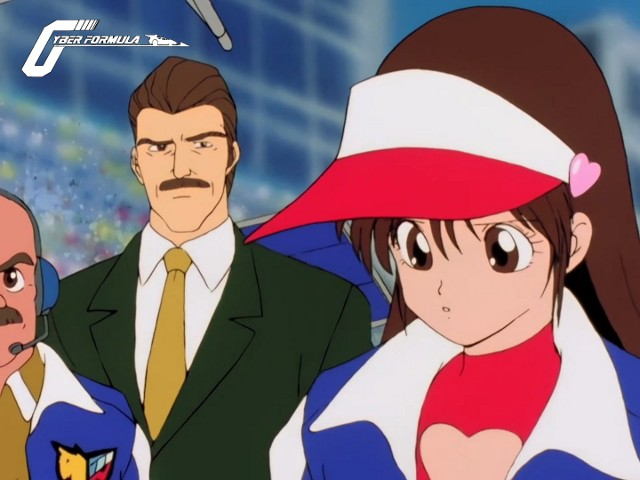

Bienvenue sur le site de la Nobluesky Fansub!
Annonces
Future GPX Cyber Formula BD 12 vostfr
Bonjour!
Malgré quelques soucis pour l'envoi de cet épisode, le voici enfin en ligne, après plus de cinq jours à tenter de l'uploader^^
Hayato a besoin de réfléchir un peu après son échec...
Future GPX Cyber Formula BD 11 vostfr

Bonjour à tous!
Voici votre épisode, tout frais pour le week-end qui s'annonce plutôt chaud, mais pas autant que...
Future GPX Cyber Formula BD 10 vostfr
Salut à tous!
Par cette magnifique journée, avec les grillons qui chantent pendant que j'écris ces lignes, je vous apporte enfin le tant attendu épisode 10, six mois après le 9, à l'aide d'une connexion...
Pack Future GPX Cyber Formula BD 08-09 vostfr
Konbanwa!
On se retrouve pour le pack, chose promise chose due. Faut bien faire voguer le bateau, tempête ou pas!
J'en profite pour souhaiter bon courage à ceux qui passent leurs exams, c'est la saison et c'est pas facile...
Future GPX Cyber Formula BD 07 vostfr
Salut!
Poursuivant ma course effrénée aux followers, me voici pour un nouvel épisode bluray!
A la prochaine^^